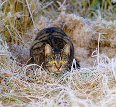
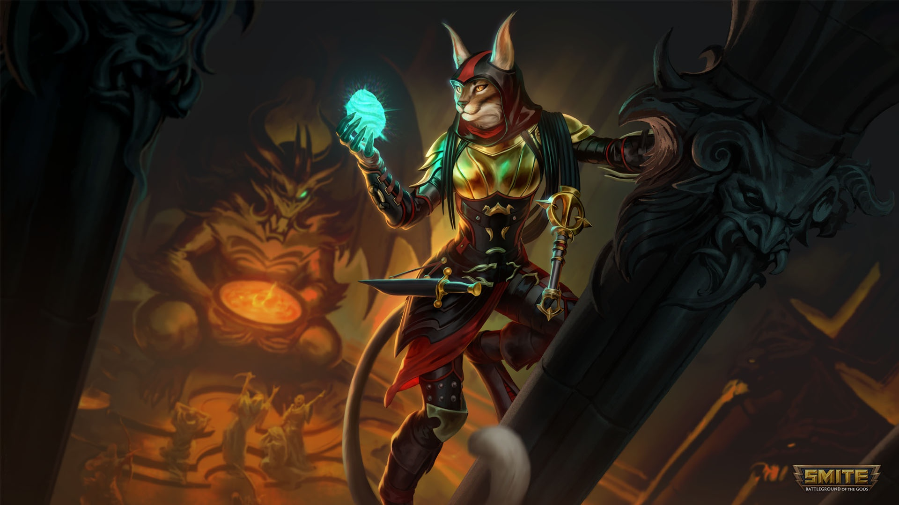
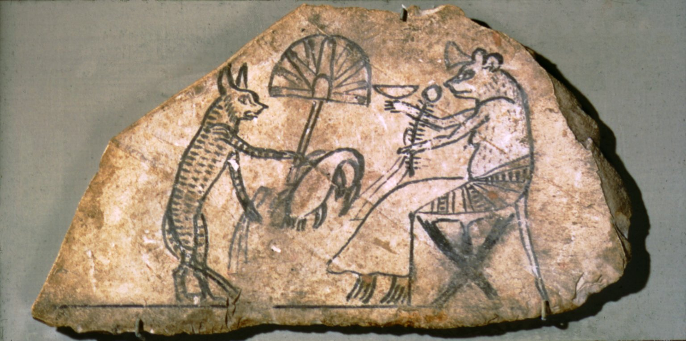
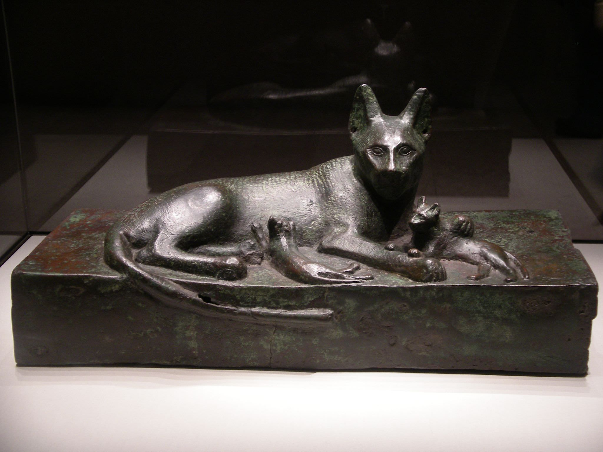
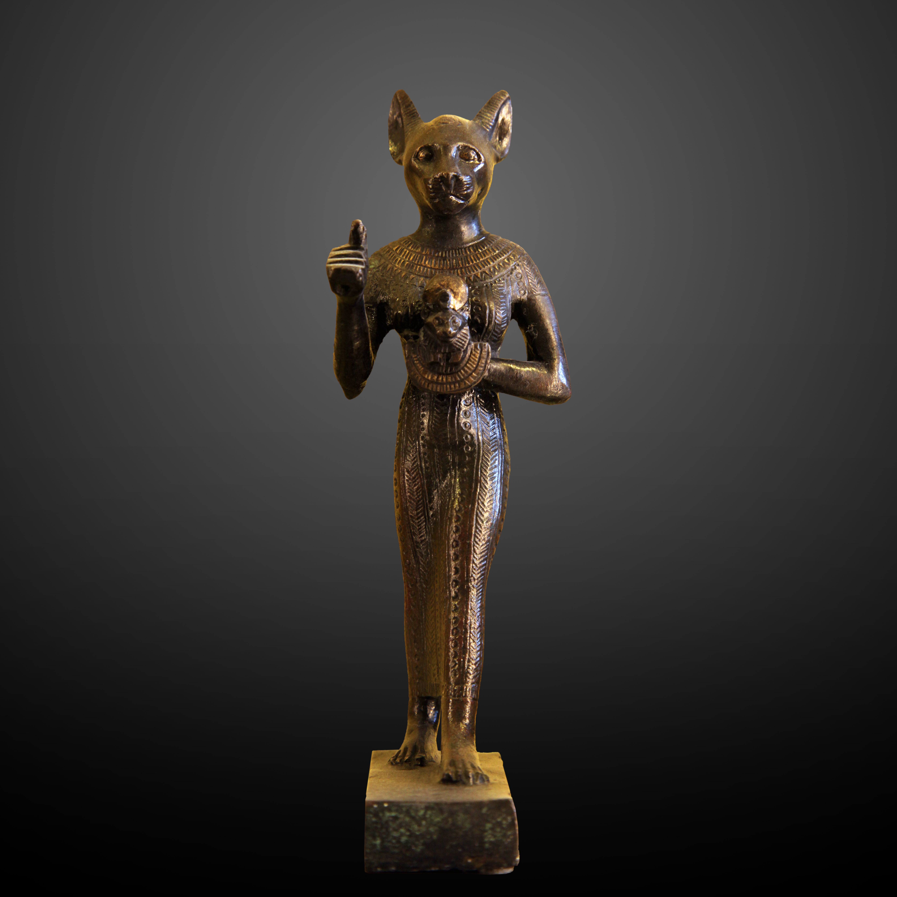

Uns 10 mil anos atrás, os gatos começaram a viver com os humanos, ajudando a acabar com os ratos que invadiam os grãos. Nessa época, surgiram lendas dizendo que eles nasceram do espírito de um leão, provavelmente porque os dois são bem parecidos, já que vêm da mesma família.
Os egípcios ficaram ainda mais próximos dos gatos, já que várias de suas divindades tinham partes de gato. A deusa Bastet, por exemplo, era uma mulher com cabeça de gata. Dá pra ver pelos registros que os gatos andavam livremente na corte e se aproximavam de todo mundo sem medo.

BASTET DEUSA


